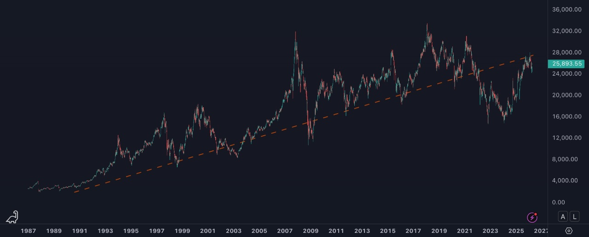

The Hang Seng recovered +77% from its October 2022 low of 14 604 to 25 893 today. That recovery brought it back to the same trendline that has defined Hong Kong's floor since 1987. The easy trade is done. The question now is whether the 2020–2023 collapse was an anomaly — or the beginning of something structural.
Draw a line from the Hang Seng's floor in 1987 through every major crisis bottom — 1998, 2003, 2009, 2016. The line rises at a consistent angle across four decades. It has held five times. In October 2022, the index touched 14 604. It has since recovered to 25 893. That recovery brought it back, almost exactly, to the trendline.
The market is no longer screaming cheap. It is asking a different question: was the collapse an anomaly — or is this line about to break for the first time in 35 years?
The answer changes everything about how you position in Hong Kong today.

What the line represents
The trendline is not a construct drawn after the fact. It is the floor of Hong Kong's secular growth rate — the minimum pace at which the exchange has compounded since the modern era began. Every time the market fell through it, the cause was identifiable: the Asian financial crisis in 1998, SARS in 2003, the global financial crisis in 2009, China's circuit-breaker episode in 2016. Every time, the underlying businesses kept running. Every time, the line held.
At 25 893, the HSI is back on that line. The recovery from the 2022 lows is real: +77% from 14 604 to today. But recovering to the trendline is not the same as confirming the recovery. It is, precisely, the moment of the test.
Two explanations, one price
Two competing theses explain the 2020–2023 collapse.
The first is the anomaly thesis. A specific, dateable sequence of events drove institutional capital out of anything with a Hong Kong listing: Beijing's regulatory crackdown on technology companies, the Evergrande default and its cascade through the property sector, zero-COVID lockdowns. These were identifiable, temporary disruptions. The underlying businesses were not structurally impaired. The prices were. The anomaly thesis says the trendline holds because the reason it broke was not permanent.
The second is the structural decline thesis. Hong Kong is following Japan after 1989. Demographics, a property market in secular contraction, debt overhang, and political uncertainty create a multi-decade headwind. The trendline does not hold. The discount becomes a permanent feature of the market, not a compression opportunity.
What Japan actually tells you
Japan is the reference everyone invokes. What usually gets left out: the Nikkei bottomed near 7 000 in March 2009. By early 2024 it had done approximately 5x — without recovering its 1989 all-time high for 35 years. A market can be in structural decline at the index level and still produce four-to-five-bagger cycles from the bottom. The two are not mutually exclusive.
That distinction matters here. Even if the structural decline thesis is correct — even if the Hang Seng never revisits 33 000 — the move from 14 604 to 28 000–30 000 would be +90% from the bottom. That trade is largely completed. The question now is whether a second leg exists, what it requires, and whether the trendline provides the base for it.
The Japan analogy also clarifies the risk. Investors who bought the Nikkei in 1990 waited 34 years to break even. The structural thesis is not incompatible with recoveries — but it is incompatible with returns that scale with the fundamentals.
The fundamental picture has not reset
The price has recovered. The underlying NAV discounts have not moved at the same speed. After a +77% recovery in the index, the major conglomerates are still publishing discounts that have no precedent in developed markets.
| Company | Documented NAV Discount | Source |
|---|---|---|
| Great Eagle Holdings | −87.5% | 2025 Annual Results Presentation (March 2025) |
| Hongkong Land | −75% | FY2025 Preliminary Results (February 2026) |
| CK Hutchison | ~−50% post-ports deal | FY2025 balance sheet, Bloomberg estimates |
| Jardine Matheson | −27% | FY2025 Analyst Presentation |
These are not distressed valuations from October 2022. These are the numbers as of early 2026, after the full recovery. A market at equilibrium does not produce an 87.5% NAV discount on a company that owns hotels in New York, London, and Hong Kong and a Central commercial portfolio in one of the world's most liquid real estate markets. The price has moved. The confidence has not followed.
The risks that do not go away
The trendline has survived five crises over 35 years. It has never been tested against a direct military confrontation in the region. A Taiwan scenario would reprice every Hong Kong valuation regardless of NAV, trendline, or corporate action. That risk has receded from the front page. It has not disappeared from the balance sheet.
If the property cycle, demographics, and debt dynamics create a 20-year ceiling similar to Japan's lost decades, then the trendline is not support. It is the last line before the index reprices permanently lower. The 35-year trendline is informative precisely because it has never broken. Its first failure would be the signal — not a noise event to buy through.
How to read this moment
The HSI at 25 893 is neither the obvious buy of late 2022 nor a market that has fully priced in a recovery. It is at the decision point — on the line that has defined Hong Kong's floor for four decades. The broad index trade is done. The trade from here is company-specific: identify the name where a privatisation offer, a share buyback, or an asset disposal compresses a specific NAV discount within a defined window.
| Scenario | Observable Signal | Implication for HSI |
|---|---|---|
| Recovery | Trendline holds on next correction; southbound flows sustain; corporate disposals accelerate | 28 000–32 000 within 18 months |
| Equilibrium | Index consolidates 24 000–27 000; no escalation; selective catalysts only | Index flat, stock-picking generates alpha |
| Test fails | Taiwan risk premium repriced; mainland flows reverse; index closes below 22 000 on volume | Retest of 18 000–20 000 |
The line has held five times. It may hold a sixth. What is different now is that the easy trade — buying the panic — has already run. The next move requires a reason, not just the absence of one for selling.